A pipe organ sample player. It reads XML-defined sample libraries, draws the instrument's own console, and plays it.
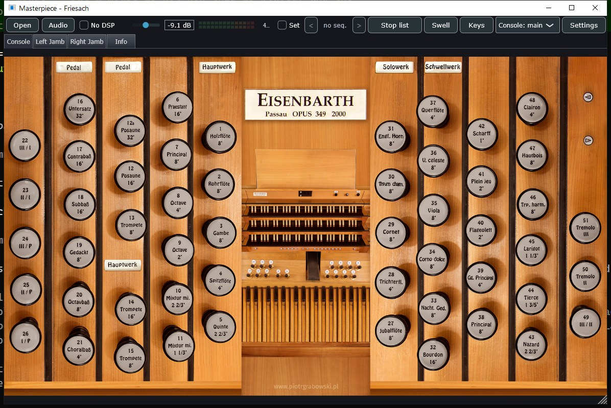
Sampled pipe organs are distributed as large libraries: a recording of every pipe, plus an XML definition describing the instrument around them — how the console is drawn, which key reaches which pipe, what the couplers do, how the wind system is built.
Masterpiece reads those libraries and turns them back into a playable instrument. It is a fresh design rather than a fork. The console is the real one, so an organ looks and behaves like itself.
It runs as a standalone application and as a VST3, AU or LV2 plugin — the same engine either way.
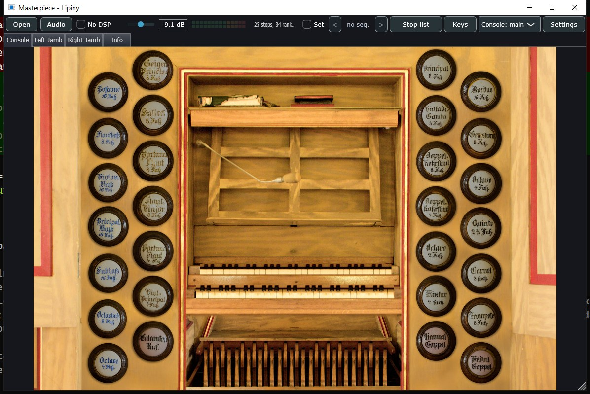
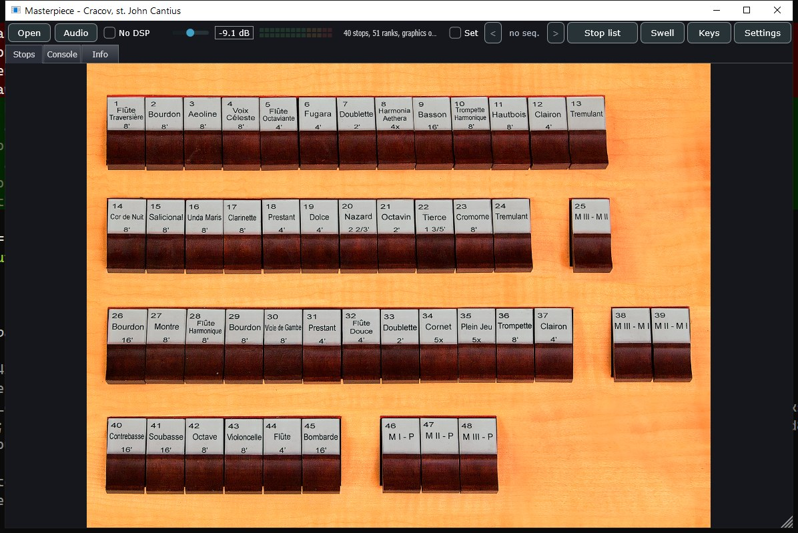
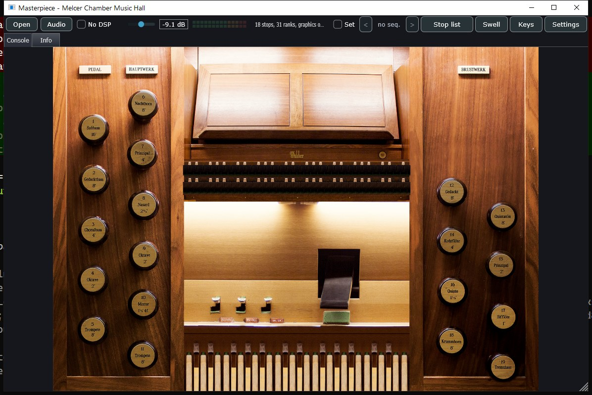
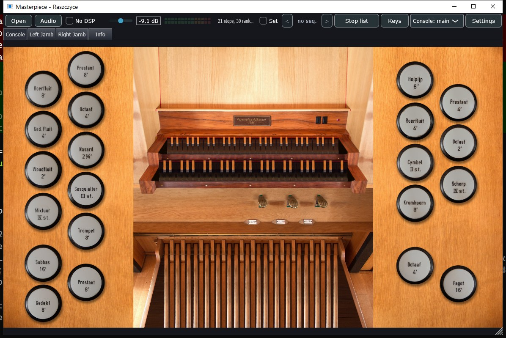
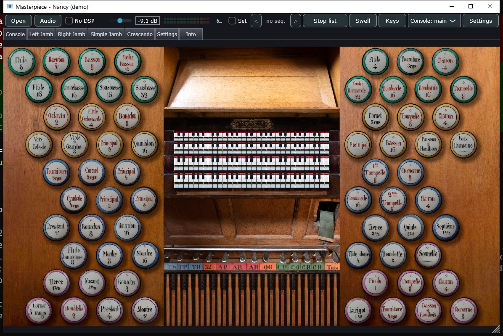
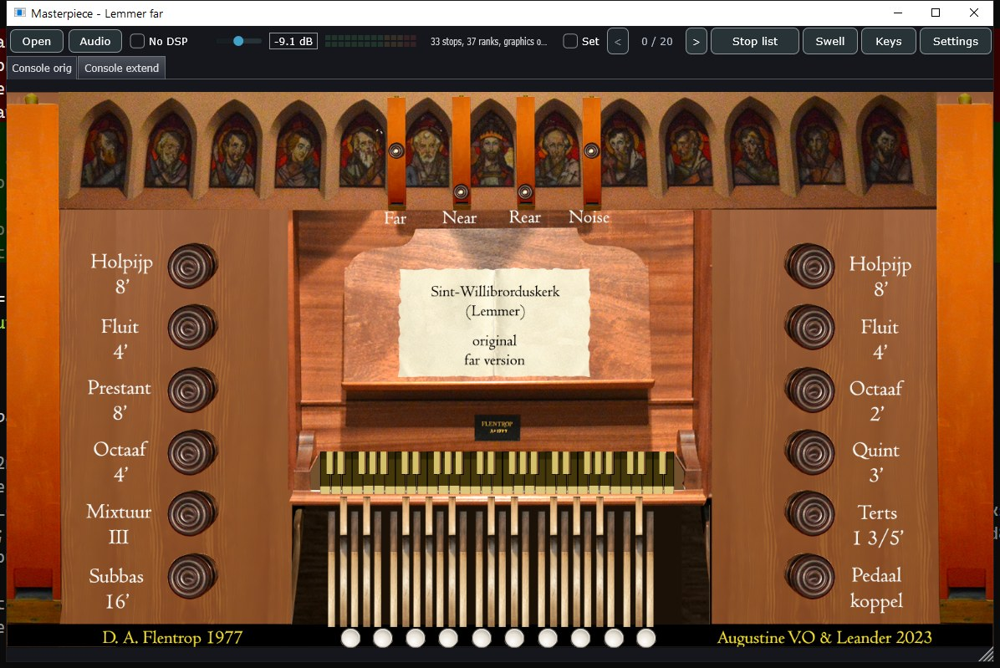
Libraries that ship several console sizes offer them all; the chooser only appears when there is a choice to make. A set whose manuals are part of a photographed backdrop falls back to an on-screen keyboard instead.
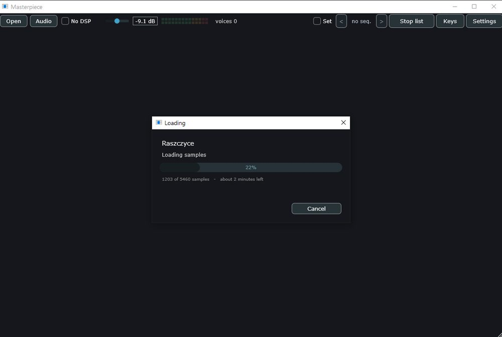
A large library is tens of gigabytes and takes minutes off a slow disk, so it loads on its own thread: the window stays live and the estimate is built from the rate the load is actually achieving, not from a file count. Cancel takes effect at the next file and throws away what it had read — a half-loaded organ that plays some notes and silently drops others would send you hunting through your library.
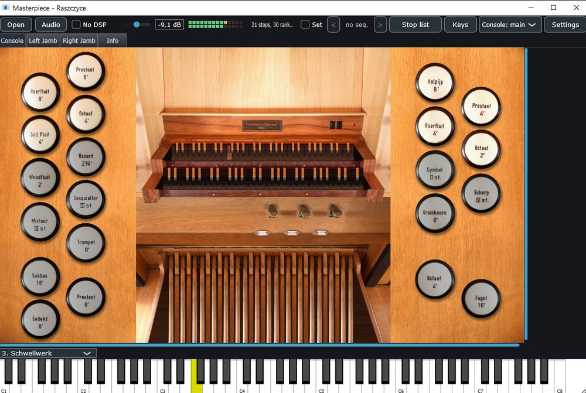
Drawstops, pistons and expression shoes are where the builder put them. A key pressed with the mouse takes the same path as the same note arriving over MIDI. The meter shows what reaches the audio device — after the room, the organ's own level and the master fader.
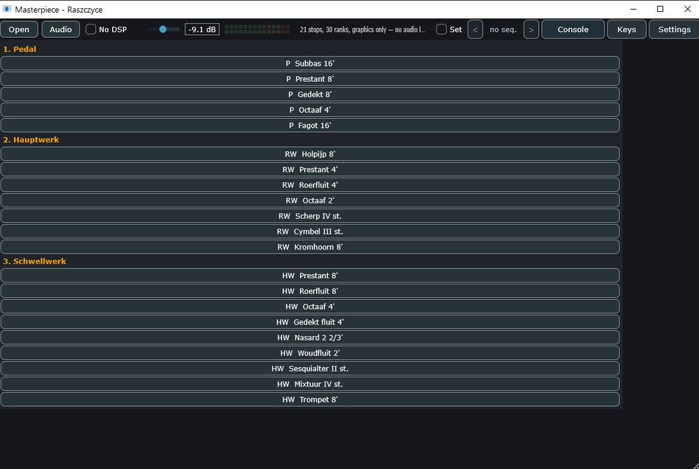
Some libraries ship no console picture, and some ship sixty stops across two jambs you would rather not hunt through. The stop list is the same registration by another route, grouped by division.
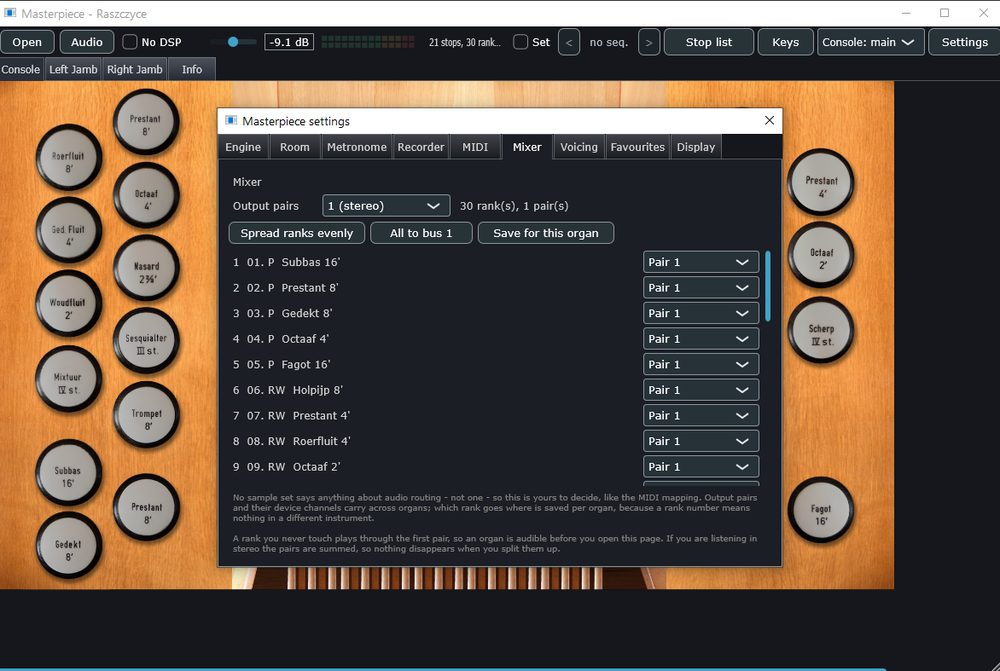
No sample library says anything about audio routing, so this is yours to decide — like the MIDI mapping. Output pairs carry across organs; which rank goes where is saved per organ, because a rank number means nothing in a different instrument. A rank you never touch plays through the first pair, and in stereo the pairs are summed, so nothing disappears when you split them up.
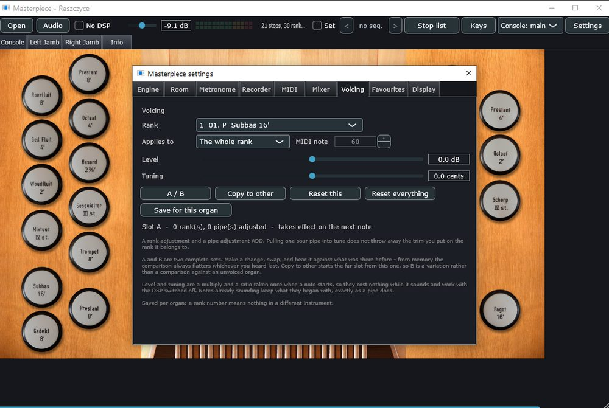
A rank adjustment and a single-pipe adjustment add, so pulling one sour pipe into tune does not throw away the trim you put on the rank it belongs to. A and B are two complete sets: make a change, swap, and hear it against what was there before — from memory the comparison always flatters whichever you heard last.
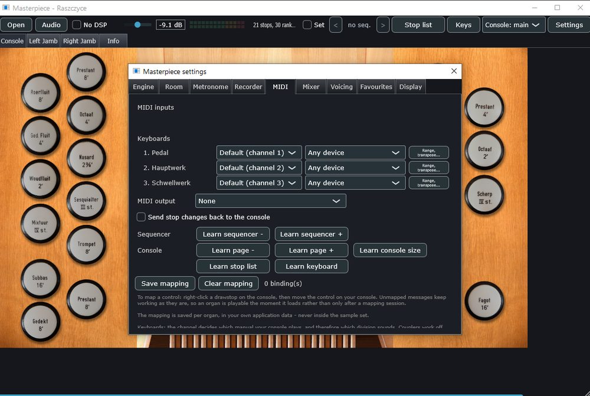
Which manual a key plays is decided by its MIDI channel, and no organ file can guess how your console is wired. Right-click a drawstop and move the real one to learn it. The sequencer pistons and page-turn actions get their own learn buttons, because the organ does not declare them and there is nothing on screen to right-click.
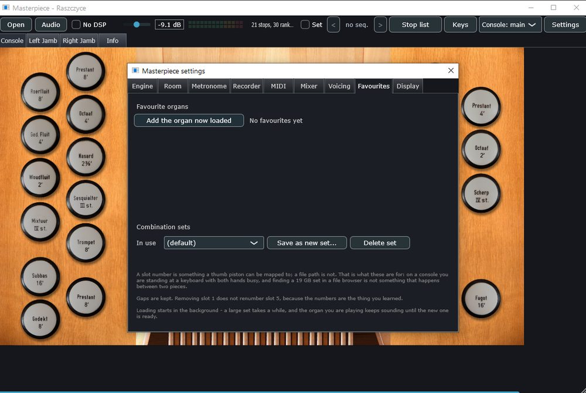
A slot number is something a thumb piston can be mapped to; a file path is not. Combination sets are whole registration books — one for a recital, another for a service — and changing set saves the one you are leaving first.
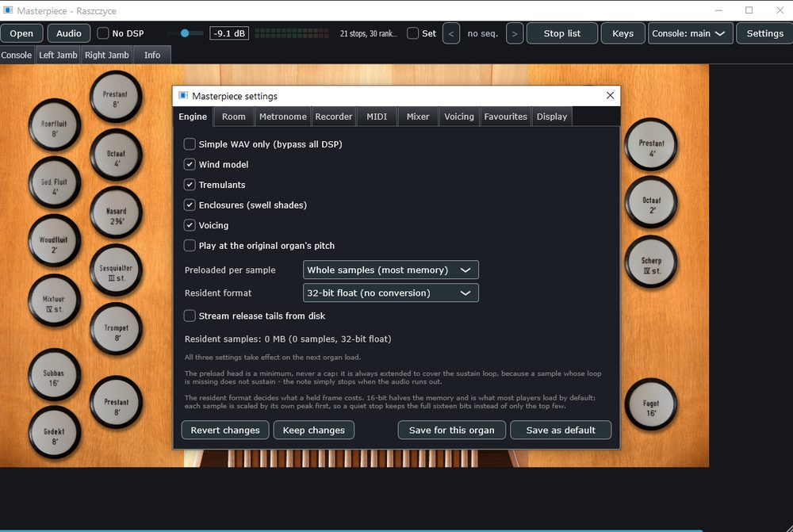
CPU and memory in one place. Simple WAV only bypasses every refinement at once for a machine that cannot afford them. Streaming holds only the head of each release tail and fetches the rest while it plays. Nothing here writes to disk on its own: changes apply immediately, and you choose afterwards whether to forget them, keep them for this organ, or make them the default.
Each pipe plays its own recording — attack, sustain loop, and a matched release tail crossfaded in rather than cut to, so releasing a key leaves the room's own decay behind.
Equal temperament or one of eight historical temperaments, each derived from its fifth-chain definition rather than transcribed.
Enclosed divisions are filtered per box as the shades move, so an unenclosed division stays unenclosed.
For libraries that describe their own pneumatics — compartments, bellows, conduits — the pressure moves as the organ draws on it.
Couplers, combinations and a registration sequencer, because a key reaching a pipe is a walk through the instrument's switch network.
A large library can be held entirely in RAM, or its release tails streamed from disk — on one set that is 12.2 GB down to 5.6 GB with the rendered audio identical sample for sample.
cmake -B build -S . -G Ninja -DCMAKE_BUILD_TYPE=Release
cmake --build buildWindows, Linux and Raspberry Pi are built in CI. The standalone application is the product; the plugin wrappers come from the same engine.
Masterpiece is its own implementation, but it is much the better for them. None of their code is compiled in.
The shape of the voice engine, and the release-crossfade behaviour that stops a key release from clicking.
The clearest available reading of the organ-definition format: which objects exist, how they link, and which of them a converter has to give up on.
Sample and loop handling, and a great deal of hard-won file-format knowledge.
The streaming design: per-voice ring buffers refilled off a background thread.